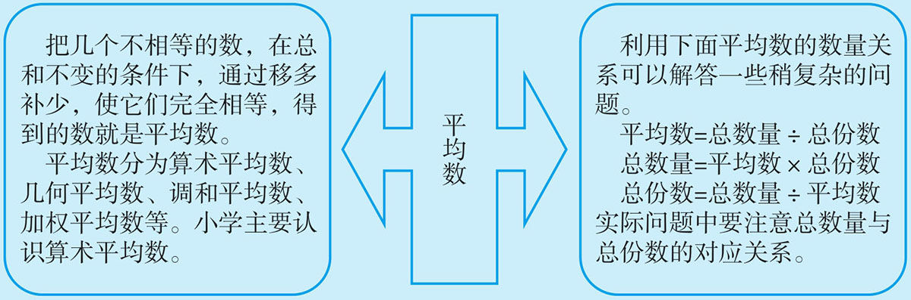
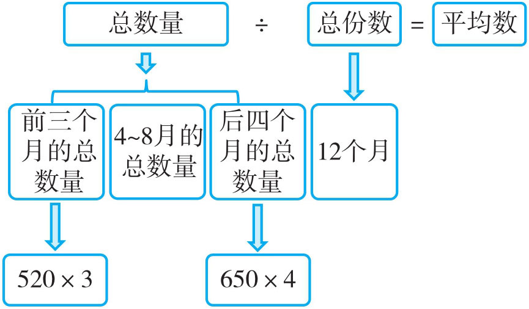
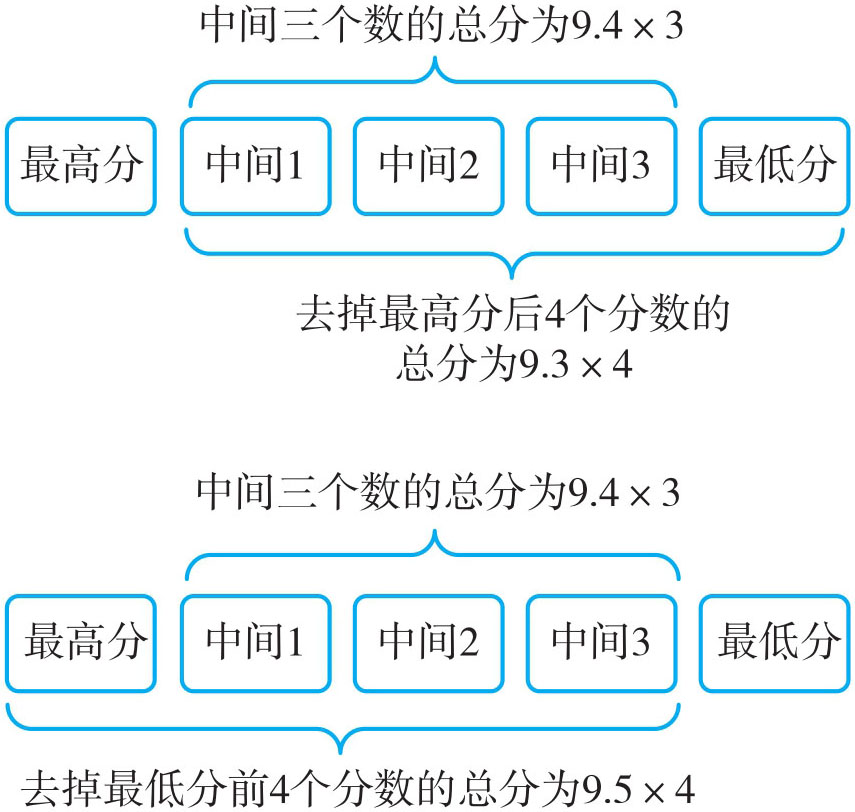
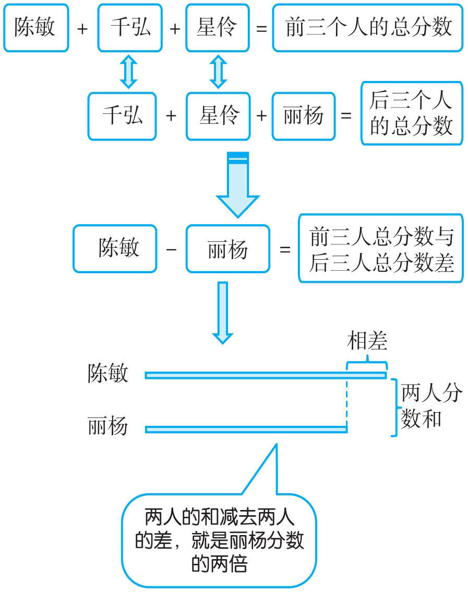
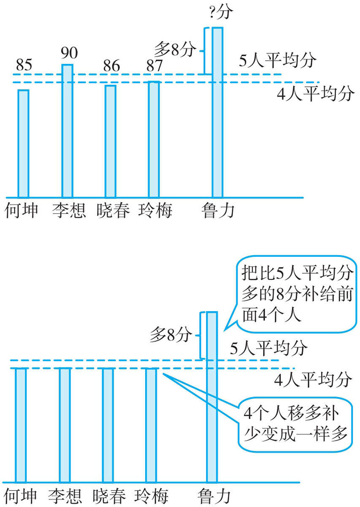
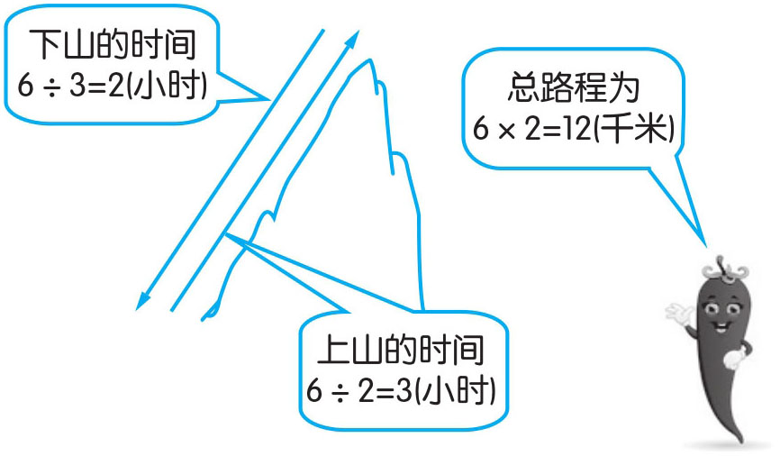

例1 2016年四川“巴山鸡”养鸡场，前三个月平均每月出售巴山鸡520只，4~8月共出售巴山鸡3520只，后四个月平均每月出售650只。该年“巴山鸡”养鸡场平均每月出售巴山鸡多少只？

(520×3+3520+650×4)÷12=7680÷12=640（只）
答：该年“巴山鸡”养鸡场平均每月出售巴山鸡640只。
例2 五位评委给一位歌手打分，如果去掉一个最高分和一个最低分，平均得分是9.4分；如果只去掉一个最高分，平均得分是9.3分；如果只去掉一个最低分，平均得分是9.5分。则这位歌手得的最高分与最低分分别是多少？

最低分：9.3×4-9.4×3=9（分）
最高分：9.5×4-9.4×3=9.8（分）
答：这位歌手得到的最高分是9.8分，最低分是9分。
例3 有4人学习小组，在一次数学检测中，已知陈敏、千弘、星伶三位同学的平均分是93分，千弘、星伶、丽杨三位同学的平均分是92分，陈敏和丽杨的平均分是94.5分。问：陈敏与丽杨各得多少分？

丽杨：[94.5×2-(93×3-92×3)]÷2=[189-3]÷2=186÷2=93（分）
陈敏：94.5×2-93=96（分）
答：陈敏96分，丽杨93分。
例4 在一次英语检测中，何坤、李想、晓春、玲梅四位同学的分数分别是85分、90分、86分、87分，第五位同学鲁力的分数比他们五个人的平均分多8分，鲁力得了多少分？
鲁力的分数比五个人的平均分多8分，说明鲁力的分数一定比四个人的平均分数高，五个人的平均分也比四个人的平均分数高。把她比五个人平均分多的8分，平均分给前面4人，每人得2分，也就是五个人的平均分比前四人平均分多2分，就成了五人的平均分。再加上8分，就是鲁力的分数。

五人的平均分：
(85+90+86+87)÷4+(8÷4)=348÷4+2=87+2=89（分）
鲁力的分数：89+8=97（分）
答：鲁力得了97分。
例5 简玮以每小时2千米的速度从山下到山顶，到山顶后，她又以每小时3千米的速度从山顶到山下。请算算她往返一次的平均速度是多少？
往返一次的平均速度＝往返的总路程÷往返的总时间。此题中没有告诉我们山下到山顶的路程，我们可以假设一个数（这个数一般是2和3的倍数，若是任意数会出现分数乘除法，六年级才涉及），为了答案的准确性，我们还可以多尝试一些数。
假设山下到山顶的距离为6千米

往返的平均速度：
6×2÷(6÷3+6÷2)=12÷5=2.4（千米／时）
答：她往返一次的平均速度为2.4千米／时。
注：同学们还可以举其他的数试一试，看看有什么发现？
1．三组学生进行跳绳比赛，甲组有5人，平均每人跳160下；乙组有8人，平均每人跳140下；丙组有7人，共了跳1040下。三个组平均每人跳了多少下？
2．把水果糖和酥心糖混在一起，平均每千克7元。已知酥心糖有4千克，平均每千克8元，水果糖有2千克，平均每千克多少元？
3．把五个数从小到大排列，其平均数是38，前三个数的平均数是27，后三个数的平均数是48，中间一个数是多少？
4．付亮与四名同学一起参加一次数学竞赛，那四位同学的成绩分别为78分、91分、82分、79分，付亮的成绩比五人的平均成绩高6分。求付亮的数学成绩。
5．一辆小车以100千米／时的速度从甲地到乙地，到达乙地后，又以60千米／时的速度从乙地到甲地，求这辆小车往返一次的平均速度。
6．一次语文测试中，甲、乙、丙三人平均分为92分，乙、丙、丁三人平均分为94分，甲、丁两人平均分为95分，问甲、丁各得多少分？
7．有两块菜地，平均每亩产量是852.5千克，已知第一块地是3亩，平均每亩产量是840千克，第二块地平均每亩产量是860千克。第二块地是多少亩？
8．仕林前五次数学测验的平均成绩是88分，为了使平均成绩达到92.5分，仕林要连续考多少次100分？
9．把一份书稿平均分给甲、乙、丙去打，甲每分钟打30个字，乙每分钟打20个字，丙每分钟打15个字。打这份书稿平均每分钟打多少个字？